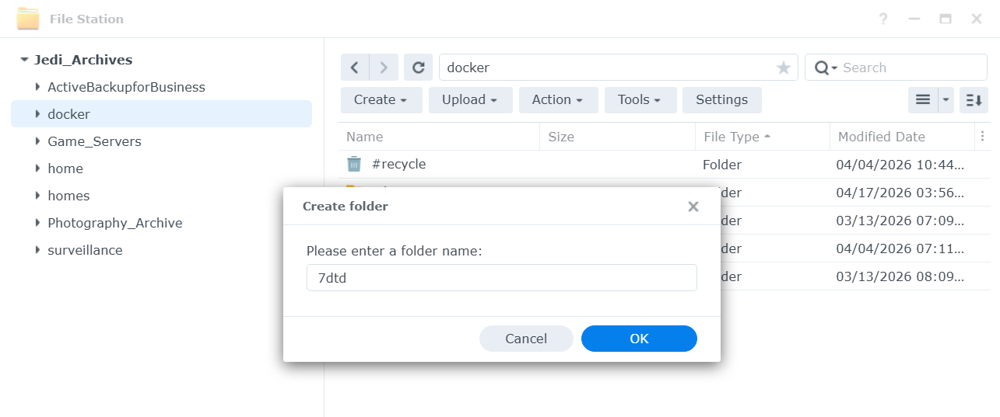
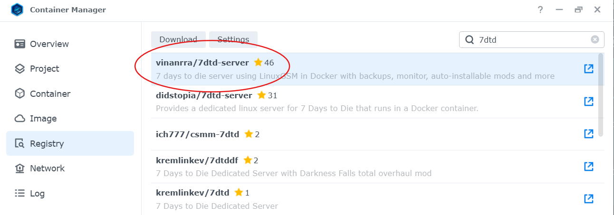
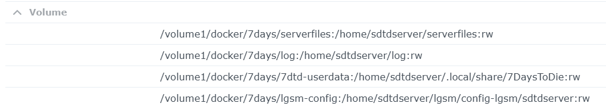
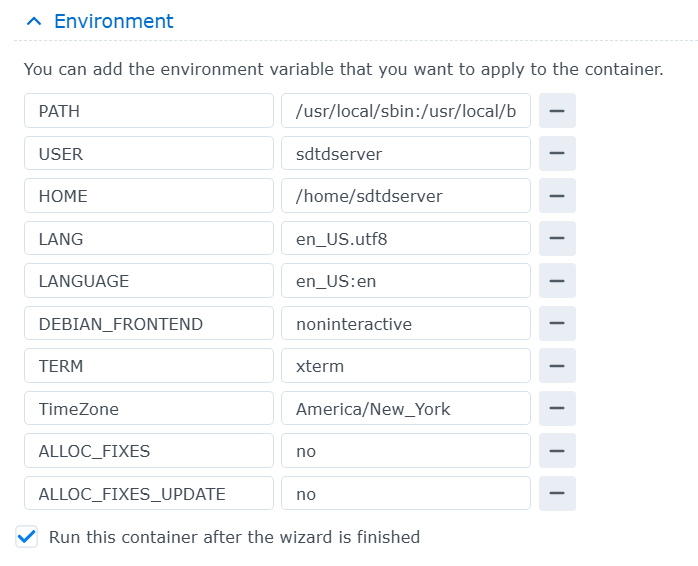
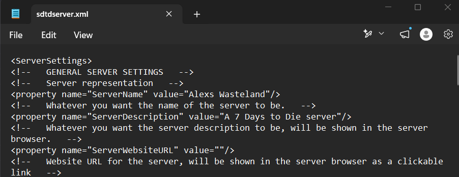

How to Host a 7 Days to Die Server on a Synology NAS
Let’s be honest: getting a 7 Days to Die dedicated server running through Docker on a Synology NAS is a massive headache. It just is. But after enough trial, error, and countless nights of research, I finally got it working smoothly.
This walkthrough is written for people using Synology Container Manager who want a private server for friends or family. I’m focusing on the parts that actually tripped me up: folder mapping, ports, XML edits, logs, and what to do when the container refuses to start.
📋 Quick Navigation
The Loadout: Hardware Requirements
Before you start clicking around in Docker, make sure your NAS actually has the resources to handle this. 7 Days to Die requires a significant amount of memory and space. Don’t skip this section. Underpowered hardware will result in constant crashes and headaches.
- The NAS: Synology DS225 or comparable model. You need something with decent processing power, not just storage.
- Memory: Ideally 16GB or more for smoother gameplay, especially during blood moons. The absolute bare minimum I would consider is 8GB, but more RAM means fewer crashes and less panic.
- Storage: The server files and world generation need an absolute minimum of 30GB of free space. I am running two Seagate IronWolf drives for redundancy, but a single 4TB or larger drive can work if you are not using your NAS heavily for other things.
Step 1: Prep Your Folders
If you haven’t already, install Container Manager, formerly Docker, from the Synology Package Center. Without it, nothing else in this guide will work.
- Open File Station and navigate to your
dockerfolder. Create it if it does not exist. -
Create a new folder named
7days. Inside that folder, create four subfolders:serverfiles,log,7dtd-userdata, andlgsm-config. - This structure keeps your game saves and server files organized. Setting this up now is crucial so you do not lose data later when you need to back things up or recreate the container.
- Pro tip: Back up these folders regularly. Set a monthly reminder to download them to your computer as a safety net.

Step 2: Grab the Docker Image
Open Container Manager, click over to the Registry, and search for a reliable 7DtD image. I recommend using the vinanrra/7dtd-server image because it has been the most consistent option I have found for this kind of Synology setup.
Avoid random images with no maintenance history. Game servers are already fussy enough without adding a mystery container into the mix.
Before You Download
Use the latest available version of the image and check that the repository has been updated recently. If an image has not been maintained in a long time, it may break when the game updates.

Step 3: Configure the Container
This is the annoying part. When you launch the image to create the container, your volume mapping, environment variables, and port forwarding need to be right or the server will not behave. Triple-check this section before assuming the container is broken.
Volume Mapping
Map the local folders on your NAS to the container’s internal data paths. Here is the mapping structure I use:
/volume1/docker/7days/serverfilesto/home/sdtdserver/serverfiles:rw/volume1/docker/7days/logto/home/sdtdserver/log:rw/volume1/docker/7days/7dtd-userdatato/home/sdtdserver/.local/share/7DaysToDie:rw/volume1/docker/7days/lgsm-configto/home/sdtdserver/lgsm/config-lgsm/sdtdserver:rw

Port Forwarding
You have to map the container ports to your local NAS ports. Then you also need to log into your home router’s admin panel, find the local IP address of your Synology NAS, and forward those same ports from your router to that NAS IP address.
- 26900 TCP/UDP, main game server port
- 26901 UDP, server query and communication port
- 26902 UDP, additional game/server communication port
⚠️ Port Forwarding Warning
If port forwarding is wrong, your friends will not be able to join your server.
Common mistakes include:
- Forwarding ports to the wrong local IP address
- Using your public internet IP instead of your NAS’s local LAN IP
- Forgetting to apply or save the router settings
- Using TCP only when the port needs UDP or TCP/UDP
- Your ISP blocking or interfering with the needed ports
How to find your NAS’s local IP:
Open Synology Control Panel, then Network, then General. Look for the IPv4 address. It usually starts with 192.168.
Environment Variables
In the container settings, look for the Environment tab. This is where you set the foundation of the server. Your exact variables may vary depending on the image version, but these are the kinds of values you will usually need to check:
BRANCH=public
SERVERDATA=-configfile=serverconfig.xml
VALIDATE=0
MAXPLAYERS=8What these do:
BRANCH=public, uses the stable public game buildSERVERDATA, points to the server configuration fileVALIDATE=0, skips Steam file validation and can speed up startupMAXPLAYERS=8, sets your player limit, which should match what your NAS can realistically handle

Step 4: Tweak the serverconfig.xml
Start the container for the first time. It will not be fully playable yet, but running it once forces it to generate a serverconfig.xml file. This first startup can take several minutes.
Stop the container before editing the config file. Synology does not always make it convenient to edit XML files directly, so this workaround is what actually helped me.
- Open File Station and navigate to
/volume1/docker/7days/lgsm-config/sdtdserver/. - Find the
serverconfig.xmlfile and download it to your computer. - Make a copy of the original file before changing anything. Name it something like
serverconfig-backup.xml. - Open the downloaded file using a plain text editor, such as Notepad on Windows or TextEdit on Mac.
- Edit the settings you care about, such as server name, password, difficulty, world size, and day length.
- Save it as an
.xmlfile. Do not accidentally save it as.txt. - Upload it back to the NAS and overwrite the unedited version.
- Start the container again.
Common settings to look for:
<property name="ServerName">, your server’s name<property name="ServerPassword">, password to join, or blank if public<property name="GameDifficulty">, difficulty setting<property name="WorldGenSize">, world size, such as 2048, 4096, 6144, or 8192<property name="DayLightLength">, day cycle timing

💾 Backup Reminder
After you set up your server, download the serverconfig.xml file to your computer and keep it backed up. If your container crashes or needs to be recreated, you will want this file so you do not lose your settings.
Step 5: Hurry Up and Wait
When you restart the container, it has to download the actual game files through SteamCMD. This can take 10 to 30 minutes depending on your internet speed. Do not panic if it takes a while. That is normal.
Open the container logs and keep an eye on what it is doing:
- In Container Manager, right-click your running container and select View Log.
- If you see lines about downloading or verifying files, that is a good sign.
- If you see it fetching data, go grab a coffee and leave it alone.
- If you see a wall of red error text, check your folder structure, permissions, XML file, and port setup.
Once the log confirms the server has successfully started, boot up the game on your PC, search for your server name, enter your password, and start punching grass.
Server Troubleshooting Guide
🛑 First Rule: Restart the NAS Before You Touch Files
If the server crashes, refuses to start, or gets stuck restarting, restart the entire NAS before editing or deleting anything.
This has solved most of the startup problems I personally ran into. A lot of the time, the issue is not your world save, container, or server files. It can be a DNS or system-level problem that clears after a full NAS restart.
Do this first: restart the NAS, wait for it to come fully back online, then start the container again and check the logs.
Common Issues and Fixes
Server will not start or the container keeps crashing
- Restart the entire NAS, not just the container.
- Check that you have enough free RAM.
- Verify your volume mappings are exactly correct.
- Check the container logs for the actual error message.
- Confirm your
serverconfig.xmlfile did not accidentally save as a text file.
❌ Friends cannot find or join the server
- Verify port forwarding is set up correctly in your router.
- Make sure the ports are forwarded to your NAS’s local LAN IP.
- Confirm the container is actually running.
- Check your NAS firewall settings under Control Panel, then Security, then Firewall.
- Ask a friend to try connecting directly using your public IP and port.
❌ Server freezes or crashes during blood moons
- Your NAS may not have enough RAM for the player count or world size.
- Reduce max players.
- Reduce world size in the XML config.
- Lower difficulty or other high-load settings if needed.
- Consider upgrading RAM if your Synology model supports it.
❌ World or settings disappeared
- This can happen if volumes were not mapped correctly.
- Check that your data is stored in your mounted NAS folders, not only inside the container.
- Restore your backed-up
serverconfig.xmlif needed. - Back up world data and config files regularly going forward.
❌ Container shows error status in Container Manager
- Open the container logs before changing anything.
- Look for missing files, invalid XML, permission errors, or port conflicts.
- Stop the container, fix the specific issue, then start it again.
- If the error is unclear, restart the NAS and check the logs again after reboot.
How to Access Your Server Logs
- Open Container Manager.
- Find your 7DTD container in the list.
- Right-click it and select View Log, or click the container and look for the Log option.
- Scroll to the bottom to see the most recent activity.
- Look for specific error messages instead of guessing.
Nuclear Option: Reset and Start Over
If nothing else works and you need a clean start, do not delete things blindly. Back up anything you care about first.
- Stop the container.
- Download a backup of your
serverconfig.xmland any world/save folders you care about. - Rename your current
/volume1/docker/7daysfolder instead of deleting it immediately. - Create a fresh folder structure following Step 1 again.
- Delete the broken container from Container Manager.
- Recreate it from scratch following Step 2 and Step 3.
- Only delete the old folder after you are absolutely sure you no longer need anything from it.
Still Stuck?
These resources are worth checking:
- vinanrra/7dtd-server-docker on GitHub, the official repository and documentation for the Docker image.
- 7 Days to Die Forums, community support and troubleshooting.
- Your container logs, which are usually the best diagnostic tool.
✅ Success Checklist
- Container is running and shows healthy/active status.
- Container logs show the server started successfully.
- You can find your server in game.
- You can join and play without immediate crashes.
- Your friends can connect from outside your network.
- You have a backup of your
serverconfig.xml. - You have tested the server under real gameplay load.
Congratulations. If you made it this far, you successfully set up a 7 Days to Die server on your Synology NAS. Go enjoy your private apocalypse with friends.